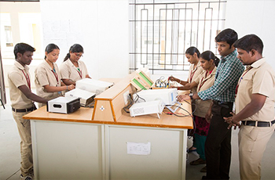

- Home
- Departments
- Electronics and Communication Department
Electronics and Communication Department
Electronics and Communication Engineering (ECE) is a hastily advancing field with spurring innovations made now and then. From dawn to dusk, we use various electronic gadgets for which Electronics and Communication Engineering plays a vital role. It is also evident that the technological developments of several countries across the globe are directly related to their strengths in electronics design, manufacture, products and services. The department nurtures students for careers in this constantly evolving discipline.The department not only technically develops the student's knowledge but also develops ethics and humanism among the students.
Vision
To produce innovative, expertise and ethical professionals in the field of Electronics and Communication to meet industrial standards and research. We transform the new technologies to the students and will be a continual improvement process
Mission
The department is committed to:
- M1: To provide budding engineers with strong basics and fundamentals to solve complex solutions in the core engineering field.
- M2: To impart leadership, moral, ethical values and entrepreneur skill to meet societal needs.
- M3: To bring out young minds with strong technical knowledge and communication skills to the competitive world.
Degree Offered
- B.E. Electronics and Communication Engineering (ECE)
Teaching Faculty
Professors/Assistant Professors
- Dr. E. Kamalavathi M.E., (HoD-Assistant Professor)
- Mr. M. Vignesh M.E., (HoD-Assistant Professor)
- Mr. T. Saravanakumar M.E.(Assistant Professor)
- Mr. S. Mohanram M.E., M.I.S.R.D.(Assistant Professor)
- Ms. B. Menaka Devi M.E.(Assistant Professor)
- Mr. M. Naveenkumar M.E.(Assistant Professor)
- Mr. B. Saravanakumar M.E.(Assistant Professor)
- Mr. V. Mutheeswaran M.E.(Assistant Professor)
- Ms. P. Nagasaratha M.E.(Assistant Professor)
- Ms. R. Keerthana M.E.(Assistant Professor)
- Ms. K. Dhanuvarcini M.E.(Assistant Professor)
- Mr. S. Agustinvijay M.E.(Assistant Professor)
- Ms. R. Divya M.E.(Assistant Professor)
Non-Teaching Faculty
- Mr. K. Sakthivel Dip. ECE (Lab Instructor)
The highly experienced and dedicated faculty members have a strong commitment towards providing quality engineering education in the domain of ECE, through periodically updated curriculum, best of breed laboratory facilities collaborative ventures with industries and by effective teaching learning process. They are committed to edify the graduates to become competent Electronics Engineers with rare distinction to understand and integrate the knowledge gained with the social issues of the community. Our department has sophisticated equipments in all laboratories and an exclusive Computer Centre. Our labs are also equipped with latest software's such as MATLAB, MULTISIM, CADENCE and MENTOR GRAPHICS. The department imparts enough practical knowledge to the students, enabling them to undertake challenges when they are placed in core and corporate sectors. Since its inception, ECE department has a steady paced growth.

Now, the department has the following laboratories.
- Electronics Circuits Laboratory
- Digital Integrated Circuits Laboratory
- Microprocessor Laboratory
- Communication System Laboratory
- VLSI Laboratory
- DSP Laboratory
- Optical Communication Laboratory
The department is equipped with the most advanced equipments in laboratories that provide opportunity to grow and excel in the technical world by conducting regular workshops and programs in various fields. The students are provided adequate training in the field of signal processing, image processing and digital communication. Students are highly motivated to attend in-plant training in some of the prestigious organizations during their course of study. This field encompasses many subfields including those that deal with power, instrumentation engineering, telecommunications, semiconductor circuit design, and many others. Our ambition is to place students in Central Government, State Governments and their sponsored corporations in public enterprises and the private organizations like All India Radio, Indian Telephone Industries, MTNL, AIR, Civil Aviation Department; Post and Telegraph Department; Co-ordination Department, National Physical Laboratory, Bharat Electronics Limited, and Development Centers in various States.
PROGRAMME EDUCATIONAL OBJECTIVES
- PEO1: To enable graduates to pursue research, or have a successful career in academia or industries associated with Electronics and Communication Engineering, or as entrepreneurs.
- PEO2: To provide students with strong foundational concepts and also advanced techniques and tools in order to enable them to build solutions or systems of varying complexity.
- PEO3: To prepare students to critically analyze existing literature in an area of specialization and ethically develop innovative and research oriented methodologies to solve the problems identified.
PROGRAMME OUTCOMES
- Engineering knowledge: Apply the knowledge of mathematics, science, engineering fundamentals, and an engineering specialization to the solution of complex engineering problems.
- Problem analysis: Identify, formulate, review research literature, and analyze complex engineering problems reaching substantiated conclusions using first principles of mathematics, natural sciences, and engineering sciences.
- Design/development of solutions: Design solutions for complex engineering problems and design system components or processes that meet the specified needs with appropriate consideration for the public health and safety, and the cultural, societal, and environmental considerations.
- Conduct investigations of complex problems: Use research-based knowledge and research methods including design of experiments, analysis and interpretation of data, and synthesis of the information to provide valid conclusions.
- Modern tool usage: Create, select, and apply appropriate techniques, resources, and modern engineering and IT tools including prediction and modeling to complex engineering activities with an understanding of the limitations.
- The engineer and society: Apply reasoning informed by the contextual knowledge to assess societal, health, safety, legal and cultural issues and the consequent responsibilities relevant to the professional engineering practice.
- Environment and sustainability: Understand the impact of the professional engineering solutions in societal and environmental contexts, and demonstrate the knowledge of, and need for sustainable development.
- Ethics: Apply ethical principles and commit to professional ethics and responsibilities and norms of the engineering practice.
- Individual and team work: Function effectively as an individual, and as a member or leader in diverse teams, and in multidisciplinary settings.
- Communication: Communicate effectively on complex engineering activities with the engineering community and with society at large, such as, being able to comprehend and write effective reports and design documentation, make effective presentations, and give and receive clear instructions.
- Project management and finance: Demonstrate knowledge and understanding of the engineering and management principles and apply these to one’s own work, as a member and leader in a team, to manage projects and in multidisciplinary environments.
- Life-long learning: Recognize the need for, and have the preparation and ability to engage in independent and life-long learning in the broadest context of technological change.
PROGRAM SPECIFIC OBJECTIVES (PSOs)
- To analyze, design and develop solutions by applying foundational concepts of electronics and communication engineering.
- To apply design principles and best practices for developing quality products for scientific and business applications.
- To adapt to emerging information and communication technologies (ICT) to innovate ideas and solutions to existing/novel problems.
Technical Quiz
- MA3355 / Random Processes and Linear
- CS3353 / C Programming and Data Structure
- EC3354 / Signals and Systems
- EC3353 / Electronic Devices and Circuits
- EC3351 / Control Systems
- EC3352 / Digital Systems Design
- EC3501 / Wireless Communication
- EC3552 / VLSI and Chip Design
- EC3551 / Transmission lines and RF Systems
- CEC352/ Satellite Communication
- CEC366/ Image Processing
- CBM370 / Wearable Devices
- GE3791/Human Values and Ethics
- CME365 / Renewable Energy Technologies
- GE3791/Human Values and Ethics
- GE3752/Total Quality Management
- OFD351/Holistic Nutrition
Odd Semester |
Even Semester |